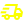

Artículos de importación

Desde 1980, estamos al servicio de la salud y el bienestar de los animales de nuestra ciudad
Nos superamos día a día con un modelo de gestión dinámico orientado a la satisfacción total. Trabajamos en equipo con un fuerte compromiso de servicio.
Somos una veterinaria de origen rosarino con más de 50 años de trayectoria. En nuestro espacio, trabajamos en equipo con un fuerte compromiso de servicio, superándonos día a día para lograr la tranquilidad de las familias y la felicidad de sus compañeros de vida.